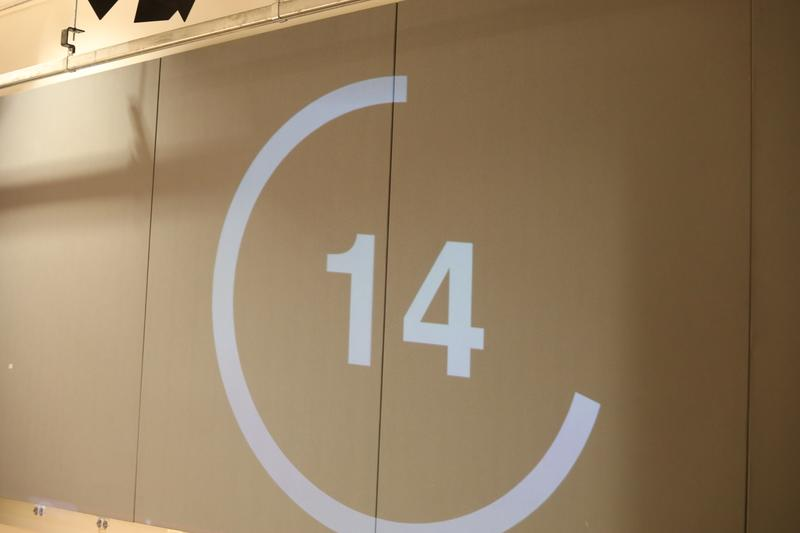
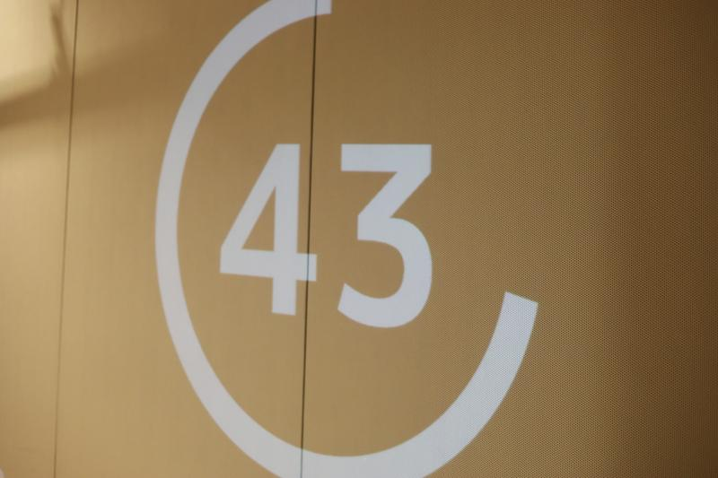

Drawing 25（Infinite Part）是一个在 NYU ITP 呈现的公共艺术游戏。灵感来自 《龙与地下城》的叙事、协作绘画，以及"脱离预设固定角色"的概念。我们自问：创作艺术是一场有限游戏还是无限游戏？它是戏剧性的还是戏剧化的？我们得出的结论是：艺术竞赛毫无疑问是戏剧性的、有限的。这个体验的核心目标，是把参与者从固定角色逐渐引向一种不存在输赢的协作——在戏剧性与戏剧化之间提供鲜明的对照。


确立目标并分享想法之后，我们设计了一个由两部分组成的游戏：
第一部分——参与者必须在绘画挑战中互相竞争，赢取"最棒艺术家"的头衔。材料是有限且分配不均的资源。
第二部分——参与者可以在没有任何限制、成功指标或任务指派的情况下自由协作绘画。他们可以画任何东西、使用任何材料。
“Drawing 25” 的名称灵感来自节目 《Physical 100》——100 位参与者角逐"最佳体格"的称号。

第一部分：戏剧性与有限（4 回合：90 秒 / 60 秒 / 20 秒 / 10 秒）
在第一部分中，我们为参与者分配具体角色，让他们遵循提示与规则去争夺"最棒艺术家"的头衔：
- · 每回合设置时间限制，让体验更具压力、更像真实的竞赛。随着游戏推进，提示与时限越来越难。
- · 参与者之间没有投票；由我们（裁判）决定谁晋级。
- · 参与者不被给予均等机会——有些人拿到更大的纸或更容易操作的材料。
- · 所有绘画工具被放在中央，参与者必须自己伸手去取。有些人会更有时间与优势拿到更多材料。
回合 1 · 90 秒
提示：画你右边的人，用至少 2 种颜色表现那个人的特征。
规则：只能在主题公布后从中央取笔与蜡笔；最先完成的 15 位满足要求的参与者晋级下一轮。
回合 2 · 60 秒
提示：画一个 emoji。
规则：必须改变纸张的形状去匹配这个 emoji；可以折叠、剪裁、撕开纸张。
回合 3 · 20 秒
提示：在一间有桌子的房间里画两种不是红色的水果。
规则：必须使用非惯用手。
回合 4 · 20 秒
提示：画一个可以自己动的东西。
规则：第一个完成的参与者获胜。
第二部分：戏剧化与无限（6 分钟）
在第二部分中，我们在大纸中央铺开一张大幅画纸，参与者围坐其间。每个人都可以自由画任何东西、以任何方式画。没有限制、没有目标、没有明确的结束——它是自发的、开放的。投影文本鼓励大家：
“一起画吧！没有规则，没有限制！让游戏保持鲜活，我们共同创作！”
反思
在 Drawing 25 的第一轮中，玩家争抢马克笔、跟随不断变化的规则、面对淘汰。我们（引导者）以主观标准评判绘画、掌控谁前进。游戏并不公平，体验混合了焦虑的痛苦与兴奋。玩家感受到求生的紧迫，也尝到武断淘汰的刺痛。
这直接对应 Trammell 的观点：游戏并不总是自愿的或愉悦的。一旦进入游戏，玩家就受制于他们无法控制的力量。引导者享受作为裁判的角色，这凸显了 Trammell 的主张——游戏常常制造主客体的动态：有人支配，有人服从。第一轮是戏剧性的：封闭的规则、既定的结果、玩家必须遵循的脚本。这里的游戏之乐依赖于排除、稀缺与风险带来的痛苦。有限游戏以限制强化紧迫；无限游戏以开放延续好奇。
我们还注意到人们如何滑入各种角色（竞争者、协作者、输不起的人、旁观者……）。如果有更多时间，我们会把这些角色更前置地放进设计。Trammell 提醒我们：游戏不只是你做了什么，也是什么被施加于你。这些角色显示，在任何游戏中，能动性都以不均衡的方式流通。更刻意地探索这些动态，将加深关于游戏如何分配权力、以及有限游戏中的角色讨论。
此外我们观察到：在第一部分（戏剧性与有限）中，参与者更投入，表达更多情绪（愤怒、喜悦、评判……）。他们想赢，而限制、压力与紧张带来的痛苦让他们想继续玩下去，去获得胜利的满足。玩的过程中，他们互相分享各自的痛苦，这让参与变得更有趣。
相比之下，在第二部分（戏剧化与无限）中，没有痛苦。没有规则，每个人都安静地画自己想画的。我们听到一些交谈，但当没有压力与限制时，房间变得更安静。我们也意识到，很难预测参与者的行为——我们没想到一些参与者会开始"反抗"（例如推拒我们的规则），而我们不得不即兴应对。
如果时间更多，我们原本想为游戏注入更多层次。就现状而言，从有限到无限的转换过于突兀。我们想把"离开戏剧性、转向戏剧化"的选择内嵌进游戏本身——邀请玩家在逐渐升高的荒谬限制下，主动放弃有限竞争、进入无限绘画。那个决定点本可以更生动地戏剧化 Carse 的对比：显示无限游戏不是由引导者赋予的，而是玩家以自身能动性选择的。然而，考虑到群体的规模与 15 分钟的时间限制，我们选择了更稳妥的路线：在第一部分结束、冠军宣布之后，再向参与者介绍游戏的第二部分。